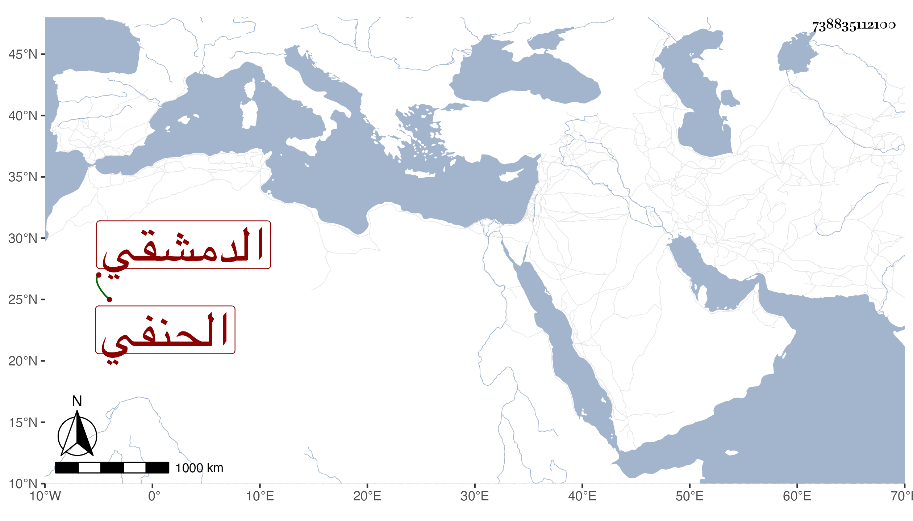

0902Sakhawi.DawLamic.ITO20230111-ara1.EIS1600.738835112100
Biography ID: 738835112100
736
محمد بن العز بن محمد بن محمد بن محمد بن عثمان بن صلح بن رسول الأماسي بهمزة ثم ميم مفتوحتين وبعد الألف سين مهملة الدمشقي الحنفي قال أنه سمع من أبيه يعنيى المتوفي سنة ثمان وتسعين والراوي عن الحجار والمذكور في معجم شيخنا وإنبائه مع ضبط نسبته ، أجاز لي على يد البرهان العجلوني وقال أنه كان يحفظ نكتا وجملة من التاريخ وأنه رأى شيخه ابن ناصر الدين يكرمه وكانت إجازته في سنة خمسين والظاهر أنه مات قريب ذلك .
